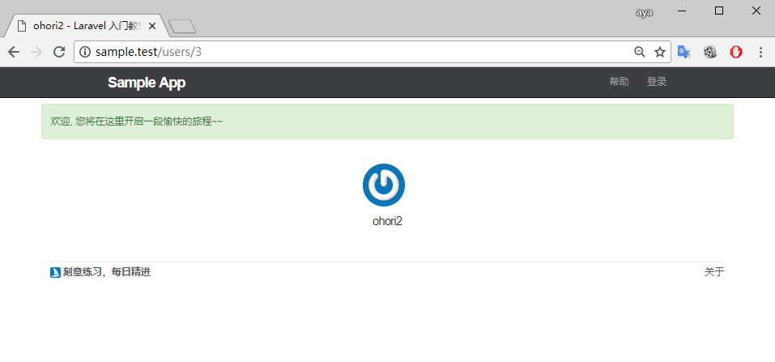

注册成功
目前用户注册失败的逻辑已经处理完成, 让我们接着完善注册成功后的处理罗家集.
当用户注册完成, 且表单信息验证通过后, 我们需要做以下两个操作:
将用户提交的信息存储到数据库, 并重定向到个人页面
在网页顶部位置显示注册成功的提示信息
保存用户并重定向
app/Http/Controllers/UsersController.php
<?php
namespace App\Http\Controllers;
.
.
.
class UsersController extends Controller
{
.
.
.
public function store(Request $request)
{
$this->validate($request, [
'name' => 'required|max:50',
'email' => 'required|email|unique:users|max:255',
'password' => 'required|confirmed|min:6'
]);
$user = User::create([
'name' => $request->name,
'email' => $request->email,
'password' => bcrypt($request->password),
]);
return redirect()->route('users.show', [$user]);
}
}
store 方法接受一个 Illuminate\Http\Request 实例参数, 我们可以用该参数来获得用户的所有输入数据, 如果我们的表单包含一个 name 字段, 则可以借助 Request 使用下面的这种方式来获取 name 的值.
如果需要获取用户输入的所有数据, 可使用
用户模型 User::create() 创建成功后会返回一个用户对象, 并包含新注册用户的所有信息, 我们将新注册用户的所有信息赋值给 $user , 并通过路由跳转来进行数据绑定.
redirect()->route('users.show', [$user]);
注意这里是一个 "约定优于配置" 的体现, 此时 $user 是 User 模型对象的实例. route() 方法会自动获取 Model 的主键, 也就是数据表 users 的主键 id , 以上代码等同于
redirect()->route('users.show', [$user->id]);
消息提示
现在验证通过的注册用户已经能够成功创建, 并进行重定向跳转了, 接下来我们需要做的是, 用户注册成功后, 在页面顶端位置显示注册成功的提示信息.
app/Http/Controllers/UsersController.php
<?php
namespace App\Http\Controllers;
.
.
.
class UsersController extends Controller
{
.
.
.
public function store(Request $request)
{
$this->validate($request, [
'name' => 'required|max:50',
'email' => 'required|email|unique:users|max:255',
'password' => 'required|confirmed|min:6'
]);
$user = User::create([
'name' => $request->name,
'email' => $request->email,
'password' => bcrypt($request->password),
]);
session()->flash('success', '欢迎，您将在这里开启一段新的旅程~');
return redirect()->route('users.show', [$user]);
}
}
由于 Http 协议是无状态的, 所以 Laravel 提供了一种经用于临时保存用户数据的方法, 会话(session), 并附带支持多种会话后端驱动, 可通过统一的 API 进行使用.
我们可以使用 session() 方法来访问会话实例, 而当我们想存入一条缓存的数据, 让它只在下一次的请求内有效时, 则可以使用 flash() 方法, flash 方法接受两个参数, 第一个为会话的键, 第二个为会话的值, 我们可以通过下面这行代码来进行赋值
session()->flash('success', '欢迎, ......');
之后我们可以使用 session()->get('success') 通过键名来取出会话中的数据, 取出结果为 '欢迎....'
接下来的消息提示我们会用会话进行闪存, 并分别为其设定指定好的键, danger warning success info 这四个键名在 bootstrap 中分别具有不同的样式展示效果, 因此我们后面将使用这几个键作为消息提示的专有设定.
现在让我们加入消息提醒视图, 让会话消息在视图上进行展示
resources/views/shared/_messages.blade.php
@foreach (['danger', 'warning', 'success', 'info'] as $msg)
@if(session()->has($msg))
<div class="flash-message">
<p class="alert alert-{{ $msg }}">
{{ session()->get($msg) }}
</p>
</div>
@endif
@endforeach
session()->has($msg) 可用于判断会话中, $msg 键对应的值是否为空, 若为空则页面上不进行显示, 最后我们通过 session()->get($msg) 来取出对应的值并在页面上进行展示
resources/views/layouts/default.blade.php
<!DOCTYPE html>
<html>
<head>
<title>@yield('title', 'Sample App') - Laravel 入门教程</title>
<link rel="stylesheet" href="/css/app.css">
</head>
<body>
@include('layouts._header')
<div class="container">
<div class="col-md-offset-1 col-md-10">
@include('shared._messages')
@yield('content')
@include('layouts._footer')
</div>
</div>
</body>
</html>
当我们再次注册一个可用用户时, 能够看到消息提示在页面上成功展示.

接下来让我们对代码进行提交, 并切回到主分支中进行合并
$ git add -A
$ git commit -m "Finish user signup"
$ git checkout master
$ git merge sign-up
将代码推送到 Github 和 Heroku 上